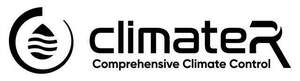

Trade Mark Journal No.2026/009 27 February 2026
UK00004338704 10 February 2026 (6,11,37)

- Class 6
- Metal vent covers for HVAC ducts; Ducts of metal for ventilating and air conditioning installations; Air conditioning installations (Ducts of metal for ventilating and -); Ventilating and air conditioning installations (Ducts of metal for -); Ducts of metal for ventilating and air-conditioning installations; Metal air conditioning ducts; Ducts of metal for air-conditioning installations.
- Class 11
- HVAC systems (heating, ventilation and air conditioning); Industrial heating furnaces; Electrical boilers; Air heating furnaces; Residential air conditioning units; Control units [thermostatic valves] for heating installations; Appliances for heating; Boilers for use in heating systems; Residential heating units; Heating, ventilating, and air conditioning and purification equipment (ambient); Cooled panels for use with electrical furnaces; Industrial heating installations; Air heating installations; Industrial humidifiers; Heating boilers; Dampers [heating]; Industrial air purifiers; Boilers for heating installations; Valves (Thermostatic -) [parts of heating installations]; Thermostatic valves [parts of heating installations]; Thermostatic valves as parts of heating installations; Vent covers [parts of air conditioning installations]; Flues for heating boilers; Industrial heaters; Electric central heating boiler systems; Tub control valves [plumbing fittings]; Recuperators for pre-heating combustion air in heating systems by the use of hot flue gas; Residential ventilating units; Manually-operated plumbing valves; Extractors [ventilation or air conditioning]; Solar heating installations.
- Class 37
- HVAC (Heating, ventilation and air conditioning) installation, maintenance and repair; Air conditioning contractor services; Plumbing; Heating contractor services; Maintenance of plumbing; Electrical contractor services; Installation of plumbing; Installation of plumbing systems; Retrofitting of heating, ventilating and air conditioning installations in buildings; Plumbing installation, maintenance and repair; Maintenance and repair of solar heating installations; Maintenance and repair of industrial piping; Installation of solar heating systems; Renovation, repair and maintenance of electrical wiring; Plumbing services; Plumbing and glazing services; Renovation of plumbing; Installation and repair of heating equipment; Heating equipment installation and repair; Electrical wiring services; Air conditioning vent sealing services; Maintenance and repair of heating; Maintenance and repair of cooling appliances and installations; Heating equipment repair; Maintenance and repair of compressors; Installation, repair and maintenance of steam condensers; Installation, repair and maintenance of heating equipment; Boiler repair services; Cleaning of electrical motors; Coating services for the repair of industrial engineering plant; Plumbing repair advisory services; Maintenance and repair of heating installations; Electric appliance installation and repair; Maintenance of electronic or air conditioning systems; Renovation of electrical wiring; Plumbing and gas and water installation; Maintenance and repair of electrical earthing systems; Servicing of industrial boilers; Repair services for domestic electrical appliances; Roofing repair; Repair of roofing; Electrical installation services; Plumbing installation advisory services; Heating equipment installation; Air-conditioning system installation and repair; Maintenance of commercial electrical systems; Construction of geothermal heating installations; Plumbing maintenance advisory services; Installation of industrial piping; Air duct cleaning services; Installation of residential solar panel power systems; Installation, repair and maintenance of boiler tubes; Air conditioning apparatus installation and repair; Installation and repair of air conditioning apparatus; Coating services for the maintenance of industrial engineering plant; Construction of geothermal community heating installations; Boiler cleaning and repair; Renovation of industrial boilers; Repair or maintenance of air conditioning apparatus; Maintenance and repair of air conditioning apparatus; Repair or maintenance of consumer electric appliances; Repair or maintenance of boilers; Repair of electrical equipment and electrotechnical installations; Repair of electrical equipment; Electric appliance repair; Services for the repair of heat exchangers.
Dryair Ltd